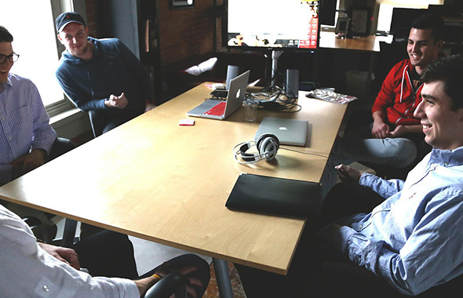
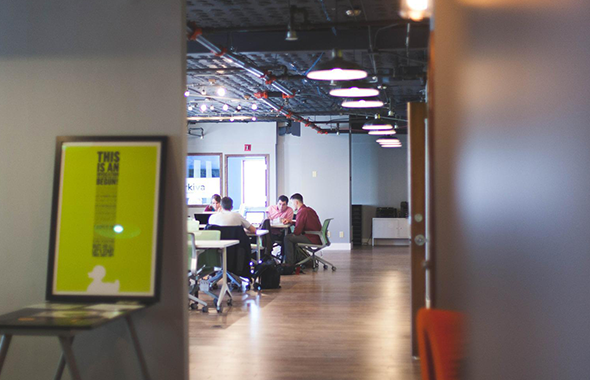

home > 인재채용 > 조직문화
조직문화
삼천리는 구성원들의 행복과 능률을 위해 다각도로 노력하고 있습니다.
일하는 곳을 행복하기 만들기 위해 가장 중요하게 생각하는 삼천리의 3가지 마음가짐입니다.
행복한 일터 만들기
-
- 투명한 일터
- 윤리헌장, 윤리강령, 실천지침을 제정하여 임직원들의 업무수행 기준으로 삼고 있으며 지속적인 윤리교육을 실시하고 있습니다. 공정한 거래질서 확립, 투명한 업무처리를 위해 선물 반송센터인 클린 신고센터를 운영하고 있습니다.
-

- 진화하는 일터
- 직무 영역별 전문가 육성을 위한 체계적인 중·장기 인재육성 프로그램을 직급, 계층별로 실시하고 있습니다. 경영학 전반의 체계적인 전문지식 습득을 하고 또한, 업계유일의 기술교육 트레이닝 센터를 운영하여 기술전문가 육성에도 힘쓰고 있습니다.
-

- 즐거운 일터
- 조기퇴근일인 '패밀리데이'. 출근시간과 중식시간의 '사내음악방송', '웰빙도시락 제공' 등 임직원의 만족도를 높이기 위한 프로그램을 지속적으로 시행하고 있으며, 감사전보발송(어버이날), 꽃바구니 전달(부부의 날), 등을 시행하여 임직원 가족들의 만족도 향상 또한 함께 추구하고 있습니다.